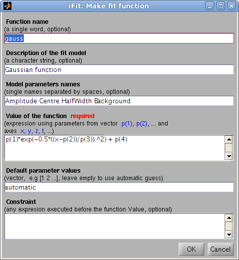

iFit: Models (fit models)
How to use models
Models are numerical functions, that take input axes and a parameter
set, and return a function evaluation.
Such models are defined as iFunc objects,
and used in iFit when there is a need to e.g. compute and plot a
function evaluation corresponding with the axes of an iData object.
Similarly, this function evaluation can be used iteratively in an
optimization process in order to find a parameter set that matches
best the iData object Signal, using the fits method (refer to the Fit
page).
Models can be used in the following ways (for instance 'model' may
be 'gauss'):
>> model % display model information
>> disp(model) % idem, extensive information
>> plot(model) % plot the model with its default settings
>> model(p, x, y ...) % evaluate the model with parameters p, and axes x,y,...
>> model([], x, y ...) % evaluate the model with axes x,y,... and automatic parameter guess
>> model('guess', x, y ...) % idem
>> a(model, p) % evaluate the model onto the iData object 'a' axes with parameters p
>> fits(a, model, p) % fit the model onto the iData object 'a'
>> fits(model, a, p) % same as above
>> save(model, 'filename', 'mat') % save the Model as a Matlab file. orher formats are possible (YAML, m, JSON, XML...)
>> iFunc('filename') % import a Model stored as m, YAML, MAT, JSON file format.
To create a model, use the ifitmakefunc
dialogue window (see below), or instantiate an iFunc
object.
>> model = gauss;
>> model = gauss+lorz;
>> model = iFunc('p(1)*x+p(2)')
>> model = iFunc('a=p(1); b=p(2); signal=a*x+b')
You can edit their code to see how to define new models:
>> edit gauss % edit the function definition (from a file)
>> edit voigt
>> edit(voig) % edit the object definition
It is also possible to create a model out of an
iData (data set) object. Then, the model
parameters are the total intensity scaling, as well as an offset
and a scaling factor per axis. In order to create a model from a
data file, use:
>> iFunc(iData('filename'))
will create a data set object and derive a model out of it.
List of default fit models
The 1D functions are signal=f(parameters,
x), and the 2D functions are signal=f(parameters, x, y).
Function
|
Description
|
Dimensionality
|
Parameters
|
allometric
|
Allometric (power/asymptotic
law)
|
1D
|
Amplitude Offset Exponent
BackGround
|
bigauss
|
Asymmetric Gaussian
|
1D |
Amplitude Centre HalfWidth1
HalfWidth2 Background |
bilorz
|
Asymmetric Lorentzian
|
1D |
Amplitude Centre HalfWidth1
HalfWidth2 Background |
| bose |
Bose factor
|
1D |
Tau [h/2pi/kT] in "x" units
|
dho
|
Damped harmonic oscillator
|
1D |
Amplitude Centre HalfWidth
Background Temperature (in
"x" unit)
|
dirac
|
Dirac peak
|
1D
|
Amplitude Centre
|
doseresp
|
Dose-response curve with
variable Hill slope. This is a sigmoid or S-shaped.
|
1D
|
Amplitude Center Slope
BackGround
|
expon
|
Exponential
decay
|
1D |
Amplitude Tau Background
|
expstretched
|
Exponential
- Stretched
|
1D |
Amplitude Tau Exponent
Background
|
| gauss |
Gaussian where the HalfWidth is in fact σ. The 'true'
half width is thus 1.177*HalfWidth.
|
1D |
Amplitude Centre HalfWidth
Background
|
green
|
Green function
|
1D
|
Amplitude Centre HalfWidth
Background |
heaviside
|
Heaviside (gap)
The GapSide indicates
raising (+) or falling (-) gap.
|
1D
|
Amplitude Centre GapSide
Background
|
langevin
|
Langevin function for
magnetic polarization
|
1D
|
Amplitude Center Width
BackGround
|
laplace
|
Laplace
distribution function
|
1D |
Amplitude Center Width
BackGround |
lognormal
|
Log-Normal
distribution
|
1D
|
Amplitude Center Width
BackGround
|
lorz
|
Lorentzian
(aka Cauchy) used with Amplitude
uncorrelated to Width.
|
1D |
Amplitude Centre HalfWidth
Background |
ngauss
|
multiple Gaussian where the
HalfWidth is in fact σ. The 'true'
half width is thus 1.177*HalfWidth. |
n*1D
|
|
nlorz
|
multiple Lorentzian used
with Amplitude uncorrelated to Width. |
n*1D
|
|
pareto
|
Pareto distribution function
|
1D
|
Amplitude Exponent Width
BackGround
|
poisson
|
Poisson distribution
WARNING: The 'x' axis is assumed to be
an integer array (counts)
|
1D
|
Amplitude Center BackGround
|
pseudovoigt
|
Pseudo Voigt
|
1D
|
Amplitude Center Width
BackGround LorentzianRatio
|
quadline
|
Quadratic
line (parabola)
|
1D |
Quadratic Linear Constant
|
sigmoid
|
Sigmoidal
S-shaped curve (similar to Dose Response)
|
1D |
Amplitude Center Width
BackGround |
sine
|
Sine
function
|
1D |
Amplitude Phase_Shift Period
BackGround
|
sinedamp
|
Damped
Sine function (exponential decay)
|
1D |
Amplitude Phase_Shift Period
BackGround Decay
|
strline
|
Straight
line
|
1D |
Gradient Background
|
triangl
|
Triangular
|
1D |
Amplitude Centre HalfWidth
Background |
tophat
|
Top-Hat
rectangular function
|
1D |
Amplitude Centre HalfWidth
Background |
twoexp
|
Two exponential decay
functions
|
1D |
Amplitude1 Tau1 Amplitude2
Tau2 Background
|
voigt
|
Voigt
function
|
1D |
Amplitude Centre
HalfWidth_Gauss HalfWidth_Lorz Background
|
gauss2d
|
Gaussian
function with tilt angle where the
HalfWidth is in fact σ. The 'true' half width is thus
1.177*HalfWidth. |
2D |
Amplitude Centre_X Center_Y
HalfWidth_X HalfWidth_Y Angle Background
|
lorz2d
|
Lorentzian
function with tilt angle used with
Amplitude uncorrelated to Width. |
2D |
Amplitude Centre_X Center_Y
HalfWidth_X HalfWidth_Y Angle Background |
plane2d
|
Planar function
|
2D |
Slope_X Slope_Y Background
|
pseudovoigt2d
|
Pseudo Voigt with tilt
angle |
2D |
Amplitude Centre_X Center_Y
HalfWidth_X HalfWidth_Y Angle Background LorentzianRatio
|
quad2d
|
Quadratic (parabola) with
tilt angle |
2D |
Amplitude Centre_X Center_Y
Curvature_X Curvature_Y Angle Background |
gaussnd
|
n-dimensional
Gaussian
|
nD
|
|
sf_hard_spheres
|
Hard Sphere structure factor
[Percus-Yevick]
|
1D  |
R rho
|
rietveld
|
Rietveld
refinement of powder sample
with full McStas
instrument model
|
1D,
2D, 3D
|
sample structure,
instrument parameters
|
| sqw_sine3d |
Phonon dispersions as sine
wave in HKL with a damped harmonic oscillator energy
dispersion |
4D (HKLw)
 |
zone center, energy gaps, periodicity, DHO
width, temperature, background
|
sqw_spinw
|
Spin-wave dispersion in HKL using SpinW. |
4D (HKLw)
|
energy broadening, Temperature, Amplitude,
coupling parameters J...
|
| sqw_vaks |
Phonon dispersions in perovskite cubic
crystals using the Vaks parameterisation |
4D (HKLw)
 |
acoustic and optical energies, coupling
parameters, soft mode frequency, DHO width, temperature,
background |
| sqw_cubic_monoatomic |
Phonon dispersions in a monoatomic cubic
crystal using the Dynamical matrix. |
4D (HKLw)
 |
acoustic force constant ratio and energy
scaling, DHO width, temperature, background |
| sqw_phonons |
Phonon dispersions from the Dynamical matrix,
using forces estimated by ab-initio DFT using ASE
|
4D (HKLw)
 |
Creation: POSCAR,
CIF,
or PDB, ...
Then, only the DHO line shape. ab-initio implies no
(few) tunable parameter. |
sqw_linquad
|
A phenomenological dispersion which can
describe e.g. an acoustic/linear mode, with quadratic
expansion in other directions. This model can be considered
as a local expansion in series of any dispersion.
|
4D (HKLw)
|
Energy and location of 'gap', slopes,
directions of slopes, DHO width, temperature, background |
sqw_acoustopt
|
A phenomenological dispersion which can
describe e.g. a pure acoustic or optical mode, with
quadratic expansion around a minimum. |
4D (HKLw)
|
Energy and location of 'gap', slopes,
directions of slopes, DHO width, temperature, background |
")
>> gauss
>> a = gauss;
The list of all available fit functions can be obtained from the command:
>> fits(iData);
which also produces the plot above.
Specialized models
Small Angle
Scattering models (neutrons, x-rays)
We list below a number of models used to describe neutron and
x-ray scattering from matter. The structure factor S(q) accounts
for the structure of matter at the atomistic/molecular level,
whereas the form factor P(q) accounts for the geometrical
arrangement of large scale scattering units (micelles, tubes,
...). In practice, the scattering from a material can be described
by:
I(q)
= P(q).S(q)
where q is the momentum exchange in the material.
These models have been extracted from:
Structure factors
|
Description
|
Dimensionality
|
Parameters
|
sf_hard_spheres
|
Hard Sphere structure factor
[Percus-Yevick]
|
1D |
R rho
|
sf_square_well
|
structure factor of particles
interacting with a square well potential [Sharma]
|
1D
|
R rho epsilon Delta T
|
sf_sticky_hard_spheres
|
Sticky Hard Sphere structure
factor [Baxter/Menon]
|
1D
|
R rho tau
|
Form factors: small angle
|
Description
|
Dimensionality
|
Parameters
|
ff_core_shell
|
Spherical/core shell form
factor [Guinier]
|
1D
|
R1 R2 eta1 eta2
|
ff_sphere
|
Sphere form factor [Guinier]
|
1D
|
R eta
|
Powder structure
refinement (Rietveld)
The rietveld model performs a structure refinement (atom
type and position, structure group) of a powder by comparing a
measured diffractogram with a simulated diffractogram using McStas and CrysFML.
This model requires external software to be installed on your
computer. See Requirements below.
Powder diffraction
|
Description
|
Dimensionality
|
Parameters
|
rietveld
|
Rietveld
refinement of powder sample
with full McStas
instrument model
|
1D,
2D, 3D
|
sample structure,
instrument parameters
|
The 'rietveld' model allows to prepare a sample+instrument
model in order to fit a diffraction/structure data set.
It is obtained by making use of the CrysFML library:
The procedure is to import a crystal structure (CIF,
ShelX, FullProf/CFL format)
then compute the HKL d-F2 list of reflections
(for crystal or powder), and insert this powder model into a
diffractometer simulated using McStas.
The detector image, which is the convolution of the sample structure
with the instrument resolution, is then compared with a given
diffractogram, and optimised to refine the crystal parameters.
The syntax to build the model, and then perform the refinement is:
>> model=rietveld(structure, ...., instrument, ....)
>> p = fits(model, measurement);
where the 'structure' describes the initial sample structure (space
group, cell parameters abc αβγ, atom positions, ...); it can be
given as a CIF,
FullProf/CFL or ShelX file, as well
as from a struct type
variable with fields 'Spgr' and
'cell', followed with atoms
(giving xyz Biso occupancy spin charge, where only xyz are
mandatory, others are optional):
Sample.cell = [10.242696 10.242696 10.242696 90.000 90.000 90.000];
Sample.Spgr = 'I 21 3';
Sample.Ca1 = [0.46737 0.00000 0.25000 0.60046 0.50000 0.0 2.0];
...
the instrument is the name of the McStas instrument description (templateDIFF.instr is the
default). The McStas simulation can be controlled using the default
McStas options, as described in the dedicated
help page : dir, ncount,
mpi, seed, gravitation, compile, monitors. The monitors
options is particularly recommended to specify which monitor file to
use from the virtual experiment. The resulting model data set should
be of the same type as the diffractometer measured data set (e.g.
TOF-angle, height-angle, ...), but not necessarily with same binning
and axes range.
Any other 'name=value'
argument is assumed to be an instrument parameter. Any scalar
parameter is made into a model parameter, whereas string/char
parameters are set as fixed instrument parameters. By default, the
sample structure (powder/single crystal) is made available to the
McStas instrument by mean of a 'reflections.laz'
file which should be used by a PowderN
or Isotropic_Sqw
component. This name can be changed by specifying the
'CFML_write=filename' option.
An example of Rietveld model is obtained from a CFL file, and the
templateDIFF instrument including PowderN(reflections=Powder,...).
We thus specify the fixed instrument parameter Powder='reflections.laz'. The
wavelength is kept fixed at 2.36, and we use monitor names matching
BananaTheta.
>> model = rietveld([ ifitpath 'Data/Na2Ca3Al2F14.cfl' ], 'templateDIFF.instr', 'Powder=reflections.laz; lambda="2.36"; monitors=BananaTheta');
Once built, it is possible to set constraints on the model with the
syntax such as (see iFunc
page) :
>> model.parameter='fix' % to lock its value during a fit process
>> model.parameter='clear' % to unlock value during a fit process
>> model.parameter=[min max] % to bound value
>> model.parameter=[nan nan] % to remove bound constraint
>> model.parameter='' % to remove all constraints on 'parameter'
>> model.Constraint='' % to remove all constraints
Then we import a data set
>> measurement = iData([ ifitpath 'Data/nac_1645179.dat' ]);
The refinement is then obtained by starting :
>> parameters = fits(model, measurement)
with optional arguments as described in the Fit
page (the 'constraints' argument of fits is partly redundant with the model
constraints seen above).
Remember to bound most or all of the model parameters for a faster
and more reliable convergence of the optimization.
You may look at the following resources to get material structure
files:
References:
- CrysFML, Commission on Crystallographic
Computing, IUCr Newsletter No.1, pp 50-58, January 2003
[link].
- McStas: K. Lefmann and K. Nielsen, Neutron News 10, 20,
(1999) ; P. Willendrup, E. Farhi and K. Lefmann, Physica B, 350
(2004) 735.
Requirements/installation:
McStas must be installed.
Packages exist for all major systems (Linux as RedHat and Debian
flavours, Windows, Mac OSX). For Debian-class systems:
cd /etc/apt/sources.list.d
sudo wget http://packages.mccode.org/debian/mccode.list
sudo apt-get update
sudo apt-get install mcstas-suite
The CrysFML does not need to be installed, as the used bits are
assembled in the cif2hkl
fortran programme, which generates HKL d-F2 reflection lists
suitable for the PowderN and Isotropic_Sqw McStas components. The
cif2hkl programme is part of the iFit distribution, and is compiled
by calling the local fortran compiler (gfortran) on demand.
Phonon/spin-wave
dispersion (simple)
The sqw_sine3d model provides a simple way to model phonon-type
dispersions, including simple spin-waves,
acoustic and optical modes, incommensurate dispersions.
Limitation: this model only handles simple
sine dispersions, and can not treat mode exchange (interferences).
For more advanced spin-wave models, use the sqw_spinwave Model (below).
S(q,w)
|
Description
|
Dimensionality
|
Parameters
|
| sqw_sine3d
|
Phonon dispersions as sine
wave in HKL (3D) with a damped harmonic oscillator energy
dispersion |
4D
(HKLw)
|
zone center, energy gaps,
periodicity. Axes are in rlu.
|
Each dispersion is a sine wave which goes continuously from
energy E0 to E1, along 3 principal lattice directions (HKL). The
dispersion has an energy width (DHO). Schematically, the
dispersion relation is:
w(Q) = E0 + (E1-E0)*sin(Q_freq*pi*(Q-Q0));
along principal axes
where the wave-vector/momentum Q is expressed in reciprocal
lattice units [r.l.u]. The parameters of this model allow extended
flexibility in the description of the mode. Along the 3D HKL
volume, a dispersion is described with 10 parameters.
The Q_freq parameter indicates how many dispersion sine
'arches' there are per reciprocal lattice unit [rlu]. A Q_freq
of 1/2 means the dispersion extends from e.g. Q=0 to Q=2 rlu. A Q_freq
of 1 means it extends from Q=0 to Q=1 rlu, and a Q_freq of
2 means there are two arches between Q=0 and Q=1 rlu (all these
with Q0=0). A Q_freq of 0 sets a flat dispersion.
To create the model without defined parameter values, you may
use:
sw = sqw_sine3d;
or alternatively, to define starting parameters:
sw = sqw_sine3d(p);
where p=[...] is a vector containing the parameter values.
It may be given as 1,2,3 and 14 value vector, as detailed below.
A spin-wave could for instance mostly use Q0=0,
Q_freq=1, E0=0, E1>0 (2 arches from Q=0 to 1 rlu). In a
simple anti-ferromagnet, the gap width is E1-E0=4J.S with
J=exchange energy and S=magnetic moment of spins.
>> sw = sqw_sine3d([ E0 E1 Q_freq ]) % creates a dispersion from E0 to E1 with given Q frequency, e.g. .5, 1 or 2
A phonon acoustic branch could use Q0=0, Q_freq=.5, E0=0
(1 arch from Q=0 to 1 rlu).
>> acoustic = sqw_sine3d(Emax) % creates an acoustic dispersion up to Emax
An phonon optical branch could use Q0=0, Q_freq=.2,
E0>E1 E1>0 (1 arch from Q=0 to 1 rlu with Q=0 energy - Raman
frequency).
>> optical = sqw_sine3d([ E0 E1 ]) % creates an optical dispersion from E0 to E1
The model parameters allow to tune the dispersion:
- To shift the minimum/maximum Q of the dispersion, move QH0,QK0,QL0
parameters.
- To change the extent of the dispersion in Q, vary QH_freq,QK_freq,QL_freq
parameters.
- To change to minimum and maximum energy, move E0 and
E1_qh,E1_qk,E1_ql parameters.
- To model an incommensurate dispersion, move both QH0,QK0,QL0
and the QH_freq,QL_freq,QK_freq parameters to
incommensurate (non rational) values.
- An anisotropic model can be obtained by having different E1
and Q_freq parameters along axes.
- A 1D or 2D dispersion can be obtained when setting the
frequencies (e.g. QK_freq QL_freq) to 0
The model parameters are:
p(
1)=
E1_qh energy at QH half period [meV]
p(
2)=
E1_qk energy at QK half period [meV]
p(
3)=
E1_ql energy at QL half period [meV]
p(
4)=
E0 zone-centre energy gap [meV]
p(
5)=
QH0 QH zone-centre [rlu]
p(
6)=
QK0 QK zone-centre [rlu]
p(
7)=
QL0 QL zone-centre [rlu]
p(
8)=
QH_freq QH frequency [multiples of pi]
p(
9)=
QK_freq QK frequency [multiples of pi]
p(
10)=
QL_freq QL frequency [multiples of pi]
p(
11)=
Gamma Damped Harmonic Oscillator width in energy [meV]
p( 12)= Temperature
[K]
p(
13)=
Amplitude
p(
14)= Background
The axes needed for the evaluation are expressed in rlu for
QH,QK,QL and in meV for the energy.
The Model evaluation is as usual (in 4D):
model(p, qh, qk, ql, w) %
return a matrix. p can be [] to use guessed/default parameters
iData(model, p, qh, qk, ql,
w) % return an iData.
A usage example is as follows:
>> ac=sqw_sine3d(5); % an acoustic branch up to 5 meV
>> qh=linspace(0,1,50);qk=qh; ql=qh'; w=linspace(0.01,10,50); % the axes for evaluation
>> f=iData(ac,[],qh,qk,ql,w); % evaluate the model onto given axes
>> plot3(log(f(:,:,1,:))); % plot as volume in [QH,QK,w, QL=0]. You can also use surf and scatter3 for other rendering
The axes are given as vectors, but the second is made
non-parallel to the others, to indicate we wish to build a volume
out of this. Without transposing the vector, as all axes are the
same length, they would be interpreted as event data, and the
resulting evaluation would only contain 50 values.
It is possible to stack as many modes as possible, in different
flavors. In this case it is advisable to link e.g. the Temperature
and Background parameters:
>> acoustic = sqw_sine3d(5); optical = sqw_sine3d([ 10 8 ]); sw = sqw_sine3d([ 2 4 1 ]);
>> disp3 = acoustic + optical + sw;
>> disp3.Temperature_2 = '"Temperature"'; % Temperature_2 = Temperature (1st sin3d)
>> disp3.Temperature_3 = '"Temperature"'; % Temperature_3 = Temperature
>> disp3.Name='sqw_sine3d: acousitc+optical+sw';
>> mlock(disp3, {'Background_2','Background_3'}); % keep them as 0 (default)
>> qh=linspace(0,1,50);qk=qh; ql=qh; w=linspace(0.01,10,51); % the axes for evaluation
>> f=iData(disp3,[],qh,qk,ql,w); % evaluate using initial model parameters
>> plot3(log(f(:,:,1,:))); % plot as volume in [QH,QK,w, QL=0].
The plot (surf), plot3, scatter3, and slice
methods for plotting all provide nice looking rendering of volume
data. See Plot/3D page.
Spin-wave model
(SpinW)
The sqw_spinw model can embed a spin-wave model from the
SpinW to "
simulate magnetic structures and excitations of given spin
Hamiltonian using classical Monte Carlo simulation and linear
spin wave theory."
Basically, SpinW allows to model a crystal structure including a
spin Hamiltonian in the form:
H = ∑ij
SiJijSj
+ ∑i SiAiSi
+ B ∑i giSi
where S are the spin vectors, J are the spin-spin
coupling matrices, A are the spin anisotropy matrices, B
is the external magnetic field, and g is the g-tensor.
S(q,w)
|
Description
|
Dimensionality
|
Parameters
|
sqw_spinw
|
Spin-wave dispersion in HKL
using SpinW.
|
4D
(HKLw)
|
energy broadening,
Temperature, Amplitude, parameters J...
Axes are in rlu.
|
A SpinW object must first be created, and is then converted into an
iFunc object using the syntax:
s = sqw_spinw(sw);
or
s = iFunc(sw);
The SpinW toolbox allows
to build spin-wave models incuding spin-spin pair coupling,
anisotropy terms and external field contribution. The model is
then converted into an iFunc object, so that fitting and plotting
is straightforward. An easy way to build a SpinW object is to read
a CIF
file, with syntax:
s = sqw_spinw(sw('cif_file'))
Additional options can be used when creating the Model, with:
s = sqw_spinw(sw, options);
where 'options' is a structure that can hold:
- options.component: a string to specify the component to
use as intensity, as documented in sw_egrid
function. Default is 'Sperp'.
Suggested is also 'Sxx+Syy+Szz'.
Once created, the model can be evaluated and used for
fitting.
The model parameters are:
p(1)=
Gamma
energy broadening (instrumental) [meV]
p(2)= Temperature
of the material [K]
p(3)= Amplitude
p(4...)= coupling
parameters of the Hamiltonian (J)
The axes needed for the evaluation are expressed in rlu for
QH,QK,QL and in meV for the energy [1 meV = 241.8 GHz = 11.604 K =
0.0965 kJ/mol]. The model can be evaluated by giving axes and model
parameters (see examples below).
- When all axes are given as vectors of same orientation and
same length, the HKLE set is assumed to be list of 'events'.
- When the H K L axes are vectors of same length/orientation,
the HKL locations is assumed to be a q-path in the BZ, but the E
(energy) axis can be of different length/orientation to compute
the Model along (q,E) path, resulting in a 2D object. Typically,
the sqw_kpath function does this, to provide the phonon
dispersion curve along principal directions.
- When the H K L E axes are given as mixed orientations/length,
as vectors or matrices, the Model evaluation is done on a HKLE
cube, which is well suited to visualize the whole dispersion
surfaces. In the example below, ql has a
different orientation (it is transposed) as qh and qk,
which triggers a 4D HKLE cube evaluation.
The Model evaluation is as usual (in 4D):
model(p, qh, qk, ql, w) %
return a matrix. p can be [] to use guessed/default parameters
iData(model, p, qh, qk, ql,
w) % return an iData
As an example, we plot a simple
square lattice Heisenberg antiferromagnet model:
sq = sw_model('squareAF',2,0);
% create the SW object (using SpinW)
s=sqw_spinw(sq);
%
create the Model
qh=linspace(0.01,1.5,50);qk=qh; ql=qh';
w=linspace(0.01,10,50);
f=iData(s,s.p,qh,qk,ql,w); plot3(log(f(:,:,1,:)));
% evaluate and plot
References
S. Toth and B. Lake, J. Phys.: Condens. Matter 27,
166002 (2015).
Requirements
In principle, the SpinW Matlab toolbox
must have been installed from e.g. <https://github.com/tsdev/spinw>
or <https://www.psi.ch/spinw/spinw>.
The version 2.1 of SpinW is included in iFit, so that the
sqw_spinw Model does not require any additional
installation.
Phonon dispersion
in perovskites
The sqw_vaks model computes the dispersion of the 5
lowest phonon
dispersions in perovskite cubic crystals. It is based on the Vaks
parametrization (see references below). The TA1,TA2,LA,TO1 and TO2
dispersions are obtained from 8 parameters, and a DHO line shape
is added. The dispersions are anisotropic, with 'valley' and soft
mode.
The dynamical matrix is 5x5 and its eigenvalues are the mode
frequencies.
Limitation: even though this is model uses
few parameters, the dynamic range is limited to e.g. |q|
< 0.3-0.5 rlu and |w| < 100 meV.
S(q,w)
|
Description
|
Dimensionality
|
Parameters
|
| sqw_vaks |
Phonon dispersions in perovskite cubic
crystals using the Vaks parameterisation |
4D (HKLw)
|
acoustic and optical , coupling parameters,
soft mode frequency. Axes in rlu.
|
To create the model without defined parameter values, you may
use:
s = sqw_vaks;
or alternatively, to define starting parameters:
s = sqw_vaks(p);
where p=[...] is a vector containing the parameter values.
It may be given as a 12 value vector or a string, as detailed below.
The model parameters are the following:
p(
1)=
At transverse acoustic slope [meV2/rlu2]
p(
2)=
Al longitudinal acoustic slope [meV2/rlu2]
p(
3)=
Aa anisotropic acoustic slope [meV2/rlu2]
p(
4)=
St soft mode transverse soft optical slope [meV2/rlu2]
p(
5)=
Sa soft mode anisotropic soft optical slope [meV2/rlu2]
p(
6)=
Vt transverse acoustic-optical coupling [meV2/rlu2]
p(
7)=
Va entered as: anisotropic acoustic-optical coupling [meV2/rlu2]
p(
8)=
w0 soft mode frequency at q=0, depends on temperature [meV]
p(
9)=
Gamma Damped Harmonic Oscillator width in energy [meV]
p( 10)= Temperature
[K]
p(
11)= Amplitude
p(
12)= Background
The axes needed for the evaluation are expressed in rlu for
QH,QK,QL and in meV for the energy [1 meV = 241.8 GHz = 11.604 K =
0.0965 kJ/mol]. The model can be evaluated by giving axes and model
parameters (see examples below).
- When all axes are given as vectors of same orientation and
same length, the HKLE set is assumed to be list of 'events'.
- When the H K L axes are vectors of same length/orientation,
the HKL locations is assumed to be a q-path in the BZ, but the E
(energy) axis can be of different length/orientation to compute
the Model along (q,E) path, resulting in a 2D object. Typically,
the sqw_kpath(s) function does this, to provide the
phonon dispersion curve along principal directions.
- When the H K L E axes are given as mixed orientations/length,
as vectors or matrices, the Model evaluation is done on a HKLE
cube, which is well suited to visualize the whole dispersion
surfaces. In the example below, ql has a
different orientation (it is transposed) as qh and qk,
which triggers a 4D HKLE cube evaluation.
- When the qh,qk,ql axes span over a whole Brillouin
zone, e.g. [-0.5 : 0.5], the phonon density of states
(DOS) is computed, and stored in s.UserData.DOS, as well
as partial DOS in s.UserData.DOS_partials (per mode).
- You may evaluate the powder dispersion using the sqw_powder(s)
function.
The plot (surf), plot3, scatter3, and slice methods
for plotting all provide nice looking rendering of volume data. See
Plot/3D page.
There are predefined parameter settings for 'KTaO3',
'SrTiO3' and 'BaTiO3'
crystals.
A usage example is:
>> s=sqw_vaks('KTaO3'); % create model, with KTaO3 parameters
>> qh=linspace(0,.5,50);qk=qh; ql=qh'; w=linspace(0.01,10,51);
>> f=iData(s,[],qh,qk,ql,w); % evaluate model into an iData
>> scatter3(log(f(:,:,1,:)),'filled'); % plot ql(1)=0 plane
References:
Acoustic phonon
dispersion in mono-atomic cubic crystal
The sqw_cubic_monoatomic model provides 3 acoustic phonon dispersions
from a dynamical matrix computation. It uses only 2 parameters for
these 3 modes, plus additional DHO parameters. Each dispersion is
basically:
w(k) = Emax*sin(k.a)
along principal axes.
The dynamical matrix is 3x3 with sine and cosine terms. Eigenvalues
provide the mode energies.
S(q,w)
|
Description
|
Dimensionality
|
Parameters
|
| sqw_cubic_monoatomic |
Phonon dispersions in a monoatomic cubic
crystal using the Dynamical matrix. |
4D (HKLw)
|
acoustic force constant ratio and scaling
energy. Axes in rlu. |
The model parameters are the following:
p(
1)=
C_ratio C1/C2 force constant ratio first/second neighbours
p(
2)=
E0 sqrt(C1/m) energy [meV]
p(
3)=
Gamma Dampled Harmonic Oscillator width in energy [meV]
p(
4)= Temperature
[K]
p(
5)= Amplitude
p(
6)= Background
The axes needed for the evaluation are expressed in rlu for
QH,QK,QL and in meV for the energy [1 meV = 241.8 GHz = 11.604 K =
0.0965 kJ/mol]. The model can be evaluated by giving axes and model
parameters (see examples below).
- When all axes are given as vectors of same orientation and
same length, the HKLE set is assumed to be list of 'events'.
- When the H K L axes are vectors of same length/orientation,
the HKL locations is assumed to be a q-path in the BZ, but the E
(energy) axis can be of different length/orientation to compute
the Model along (q,E) path, resulting in a 2D object. Typically,
the sqw_kpath function does this, to provide the phonon
dispersion curve along principal directions.
- When the H K L E axes are given as mixed orientations/length,
as vectors or matrices, the Model evaluation is done on a HKLE
cube, which is well suited to visualize the whole dispersion
surfaces. In the example below, ql has a
different orientation (it is transposed) as qh and qk,
which triggers a 4D HKLE cube evaluation.
- When the qh,qk,ql axes span over a whole Brillouin
zone, e.g. [-0.5 : 0.5], the phonon density of states
(DOS) is computed, and stored in s.UserData.DOS, as well
as partial DOS in s.UserData.DOS_partials (per mode).
- You may evaluate the powder dispersion using the sqw_powder(s)
function.
A usage example is:
>> s=sqw_cubic_monoatomic([ 3 3 ]); % create model, with C1/C2=3 E0=3
>> qh=linspace(0,.5,50);qk=qh; ql=qh'; w=linspace(0.01,10,51);
>> f=iData(s,[],qh,qk,ql,w); % evaluate model into an iData
>> plot3(log(f(:,:,1,:))); % plot ql(1)=0 plane
The plot (surf), plot3, scatter3, and slice methods
for plotting all provide nice looking rendering of volume data. See
Plot/3D page.
References:
Phenomenological
linear/quadratic dispersion
This model is suited to describe a linear or quadratic dispersion.
The dispersion slopes (in [meV/rlu]) are given for user defined axes
(e.g. principal crystal directions in reciprocal space). Two
directions must be given from which the 1st one is used as is (but
normalised) to indicate the 'linear' dispersion direction, the
second axis is used to define an ortho-normal reciprocal coordinate
frame. The 2nd and 3rd dispersion slopes apply into this frame.
The general dispersion relation has the form:
w(q) = √[ (Slope1*(q-HKL0) +
E0)2 + Slope22*(q-HKL0)2 +
... ]
where the Slope parameters are specified for 3 directions.
Along dir1 the dispersion is linear, along other directions
it is quadratic (becomes linear far from HKL0).
Such a model can be used to model an acoustic/linear
dispersion (with a given slope/velocity), which has a given energy
E0 at a given HKL0 location, use:
- s=sqw_linquad([H0 K0 L0 E0]);
The HKLE0 location is typically the centre of a measurement scan.
The sqw_acoustopt
model (below) is somewhat similar, but specifies the minimum
of the dispersion instead of a specific location from which the
expansion is linear/quadratic.
S(q,w)
|
Description
|
Dimensionality
|
Parameters
|
sqw_linquad
|
A phenomenological dispersion which can
describe an acoustic or optical mode. This model can be
considered as a local expansion in series of any dispersion. |
4D (HKLw)
|
Energy and location of 'gap', slopes,
directions of slopes, DHO width, temperature, background |
The model parameters are the following:
p(
1)=
DC_Hdir1 Slope1 dispersion direction, linear,
H [rlu]
p(
2)=
DC_Kdir1 Slope1 dispersion direction, K [rlu]
p(
3)=
DC_Ldir1 Slope1 dispersion direction, L [rlu]
p(
4)=
DC_Hdir2 Slope2 dispersion direction, H
(transverse) [rlu]
p(
5)=
DC_Kdir2 Slope2 dispersion direction, K
(transverse) [rlu]
p(
6)=
DC_Ldir2 Slope2 dispersion direction, L
(transverse) [rlu]
p(
7)= DC_Slope1
Dispersion slope along 1st axis, linear [meV/rlu]
p(
8)= DC_Slope2
Dispersion slope along 2nd axis (transverse to 1st, in plane)
[meV/rlu]
p(
9)= DC_Slope3
Dispersion slope along 3rd axis (transverse to 1st, vertical)
[meV/rlu]
p(
10)=
Ex_H0 Excitation location H [rlu]
p(
11)=
Ex_K0 Excitation location K [rlu]
p(
12)=
Ex_L0 Excitation location L [rlu]
p( 13)= Ex_E0_Center
Excitation location, Energy [meV]
p( 14)= DHO_Amplitude
p( 15)= DHO_Damping
Excitation damping, half-width [meV]
p( 16)= DHO_Temperature
Temperature [K]
p(
17)= Background
The axes needed for the evaluation are expressed
in
rlu for QH,QK,QL and in meV for the energy [1 meV =
241.8 GHz = 11.604 K = 0.0965 kJ/mol]. The model can be evaluated
by giving axes and model parameters (see examples below).
- When all axes are given as vectors of same orientation and
same length, the HKLE set is assumed to be list of 'events'.
- When the H K L axes are vectors of same length/orientation,
the HKL locations is assumed to be a q-path in the BZ, but the
E (energy) axis can be of different length/orientation to
compute the Model along (q,E) path, resulting in a 2D object.
Typically, the sqw_kpath function does this, to
provide the phonon dispersion curve along principal
directions.
- When the H K L E axes are given as mixed
orientations/length, as vectors or matrices, the Model
evaluation is done on a HKLE cube, which is well suited to
visualize the whole dispersion surfaces. In the example
below, ql has a different orientation (it is
transposed) as qh and qk, which triggers a 4D
HKLE cube evaluation.
- When the qh,qk,ql axes span over a whole Brillouin
zone, e.g. [-0.5 : 0.5], the phonon density of states
(DOS) is computed, and stored in s.UserData.DOS, as
well as partial DOS in s.UserData.DOS_partials (per
mode).
- You may evaluate the powder dispersion using the sqw_powder(s)
function.
The Slope parameters allow to estimate the mode group velocity.
Using the definition rlu = 2pi/
a where
a is the
excitation periodicity, we can derive:
velocity[m/s] = Slope[meV/rlu]
*a[Angs] /2pi * 151.9
A usage example is:
- s=sqw_linquad([ 0.25 0 0 5])
- qh=linspace(0,0.5,51);qk=qh;
ql=qh'; w=linspace(0.01,20,50);
- f=iData(s,[],qh,qk,ql,w);
% evaluate model into an
iData
- plot3(log(f(:,1,:,:)));
Phenomenological
acoustic/optic dispersion (quadratic)
This model is suited to describe a quadratic dispersion with
given minimum/gap. The dispersion slopes (in [meV/rlu]) are
given for user defined axes (e.g. principal crystal directions
in reciprocal space). Two directions must be given, which are
used to define an ortho-normal reciprocal coordinate frame. The
dispersion slopes apply into this frame.
The general dispersion relation has the form:
w(q) = √[ E02 + Σ(Slope2*(q-HKL0)2
]
where the Slope parameters are specified for 3 directions. Along
given directions the dispersion is quadratic (becomes linear far
from HKL0).
Such a model can be used to model an
acoustic/linear
dispersion (with a given slope/velocity), which has a given energy
minimum E0 at a given HKL0 location, use:
- s=sqw_acoustopt([H0 K0 L0 E0]);
To model an
acoustic mode, use e.g.
H0=K0=L0=E0=0
and adjust the
Slope parameters.
To model an
optical mode, use e.g.
H0=K0=L0=0
but set
E0 to a finite energy (e.g. zone centre energy).
To model something else, use other parameters... ;-)
The
sqw_linquad
model (above) is somewhat similar, but specifies a
specific
HKLE location instead of the minimum of the dispersion from which
the expension is quadratic.
S(q,w)
|
Description
|
Dimensionality
|
Parameters
|
sqw_acoustopt
|
A phenomenological dispersion which can
describe an acoustic or optical mode.
|
4D (HKLw)
|
Energy and location of 'gap', slopes,
directions of slopes, DHO width, temperature, background |
The model parameters are the following:
p(
1)=
DC_Hdir1 Slope1 dispersion direction, H [rlu]
p(
2)=
DC_Kdir1 Slope1 dispersion direction, K [rlu]
p(
3)=
DC_Ldir1 Slope1 dispersion direction, L [rlu]
p(
4)=
DC_Hdir2 Slope2 dispersion direction, H
(transverse) [rlu]
p(
5)=
DC_Kdir2 Slope2 dispersion direction, K
(transverse) [rlu]
p(
6)=
DC_Ldir2 Slope2 dispersion direction, L
(transverse) [rlu]
p(
7)=
DC_Slope1 Dispersion slope along 1st axis
[meV/rlu]
p(
8)=
DC_Slope2 Dispersion slope along 2nd axis
(transverse to 1st, in plane) [meV/rlu]
p(
9)=
DC_Slope3 Dispersion slope along 3rd axis
(transverse to 1st, vertical) [meV/rlu]
p(
10)=
Ex_H0 Minimum of the dispersion, H [rlu]
p(
11)=
Ex_K0 Minimum of the dispersion, K [rlu]
p(
12)=
Ex_L0 Minimum of the dispersion, L [rlu]
p( 13)= Ex_E0_Center
Minimum of the dispersion, Energy [meV]
p( 14)= DHO_Amplitude
p( 15)= DHO_Damping
Excitation damping, half-width [meV]
p( 16)= DHO_Temperature
Temperature [K]
p(
17)= Background
The axes needed for the evaluation are expressed in
rlu
for QH,QK,QL and in meV for the energy [1 meV = 241.8 GHz = 11.604
K = 0.0965 kJ/mol]. The model can be evaluated by giving axes and
model parameters (see examples below).
- When all axes are given as vectors of same orientation and
same length, the HKLE set is assumed to be list of 'events'.
- When the H K L axes are vectors of same length/orientation,
the HKL locations is assumed to be a q-path in the BZ, but the
E (energy) axis can be of different length/orientation to
compute the Model along (q,E) path, resulting in a 2D object.
Typically, the sqw_kpath function does this, to
provide the phonon dispersion curve along principal
directions.
- When the H K L E axes are given as mixed
orientations/length, as vectors or matrices, the Model
evaluation is done on a HKLE cube, which is well suited to
visualize the whole dispersion surfaces. In the example
below, ql has a different orientation (it is
transposed) as qh and qk, which triggers a 4D
HKLE cube evaluation.
- When the qh,qk,ql axes span over a whole Brillouin
zone, e.g. [-0.5 : 0.5], the phonon density of states
(DOS) is computed, and stored in s.UserData.DOS, as
well as partial DOS in s.UserData.DOS_partials (per
mode).
- You may evaluate the powder dispersion using the sqw_powder(s)
function.
The Slope parameters allow to estimate the mode phase velocity for
acoustic modes when E0=0. Using the definition rlu = 2pi/
a
where
a is the excitation periodicity, we can derive:
velocity[m/s] = Slope[meV/rlu]
*a[Angs] /2pi * 151.9
A usage example is:
- s=sqw_acoustopt([ 0.25 0 0 5])
- qh=linspace(0,0.5,51);qk=qh;
ql=qh'; w=linspace(0.01,20,50);
- f=iData(s,[],qh,qk,ql,w);
% evaluate model into an
iData
- plot3(log(f(:,1,:,:)));
Phonon dispersion
from ab-initio force estimate and dynamical matrix
The sqw_phonons model computes phonon dispersions (lattice dynamics) using
the Atomic Simulation
Environment (ASE) in the so-called small displacement
methodology. The only needed input for the model to run is the
name of a configuration file describing the material lattice and
atom positions. This file can be in any ASE
supported format, e.g. POSCAR,
CIF,
PDB, ...
S(q,w)
|
Description
|
Dimensionality
|
Parameters
|
sqw_phonons

|
Phonon dispersions from the Dynamical matrix,
using forces estimated by ab-initio using ASE and a
selection of DFT codes (EMT, GPAW, ABINIT, Elk, QuantumEspresso, VASP). |
4D (HKLw)
|
Creation: POSCAR,
CIF,
PDB, ...
Then, only the DHO line shape. ab-initio implies no
(few) tunable parameter. Axes in rlu. |
The procedure is entirely automatic. A supercell is automatically
generated, then forces are estimated by differentiation of a set of
atom displacements. Temporary data files are created. The model can
then be evaluated onto an HKLE trajectory, and plotted.
As the Phonon calculation is by itself a full story, we provide dedicated help pages:
Model builder: defining a new model
easy
The ifitmakefunc tool
enables to define a new fit function/model from a simple dialog, by
entering its expression as a function of
the parameter vector p and the axes x,y,z,t,u,v,w
>> h=ifitmakefunc;
>> h=edit(iFunc); % equivalent
The only required argument is the expression, but you may as
well enter a function name and description, parameter names
and default values, as well as a constraint to be evaluated before
computing the function value. When started without any parameters,
the Gaussian function settings are used.
The function both creates a function file, and returns its model
object, that may evaluate and adjust to a data set with fits.
>> [p,criteria,message,output]= fits(a, h);
>> [p,criteria,message,output]= fits(h, a); % same as above
A quick definition, without using the dialog, can be performed with
the syntax:
>> h=ifitmakefunc('p(1)*exp( (x-p(2))/p(3) )');
>> fits(a, iFunc('p(1)*exp( (x-p(2))/p(3) )')); % same as above
where p
is the vector that holds parameters. Axes are x (rows),y (columns),z (pages),t (time). Beware to use a model
expression with element-wise division and multiplication operators (./ and .*). The function builder is
known to work well for 1D and 2D functions.
You can also build complex models from simpler ones using iFunc methods/operators, such as in
>> h = gauss + lorz
>> h = convn(lorz, 3)
>> h = convn(gauss, lorz)
>> h = gauss .* lorz; % a 1D model
>> h = gauss * lorz; % a 2D model
The full syntax for the model builder is:
>> h=ifitmakefunc('expression');
>> h=ifitmakefunc(iFunc model);
>> h=edit(iFunc model); % same as above
>> h=ifitmakefunc('function_name', 'description', 'Parameter1 Parameter2 ...', ...
'expression', [default parameter values], 'constraint');
which is equivalent to:
>> fun.Name='function short name';
>> fun.Description='function description'; % function long description
>> fun.Parameters='Parameter1 Parameter2 ...'; % parameter names. When empty, names are given according to the Expression analysis (when appropriate)
>> fun.Guess=[0 1 2 ...] or 'automatic'; % parameter default values (vector), or automatic mode
>> fun.Expression='expression using p and x,y,z,t...'; % value of the model (required). p is the vector that holds parameters. Axes are x,y,z,t,u,v,w.
>> fun.Constraint='evaluated before Expression'; % constraint evaluated prior to the model Expression
>> h=iFunc(fun);
>> fits(a, h);
The generated code will basically be:
function y=Name(p, axes, ...)
% Description
% Parameters: [fun.Parameters]
Constraint;
y=Expression;
The resulting function has the ability to identify itself (disp(model) provides
detailed informations), compute automatic starting parameters with
e.g. feval(model, 'guess'),
display itself plot(model),
and evaluate its value of course feval(model, parameter_values, axes, ...). The
resulting model is a iFunc object. Refer
to that object description for more information.
A large set of 1D (vector) and 2D (surface) models can be obtained
from ZunZun.com.
Creating complex
functions from simple functions
To assemble existing functions
into new ones, you may use the iFunc operators e.g.:
>> h=gauss+lorz; h.Constraint = 'p(8)=0';
which creates a new function which is the sum of a Gaussian and a
Lorentzian. Unspecified arguments are guessed/automatically
set. The second redundant Lorentzian Background p(8) parameter is forced to 0
so that it does not correlate with the Gaussian Background p(4).
Using signal
convolution/correlation in new functions
It is possible to include a convolution (FFT based,
multidimensional) in the core of the new function. The two function
fconv
and fconvn
should then be used with the following syntax, where a and b are vectors/matrices:
>> c = fconv(a,b); % returned convoluted object with size which is size(a)+size(b)+1
>> c = fconv(a,b, 'same'); % returned convoluted object with size which is size(a)
>> c = fconv(a,b, 'valid'); % returned convoluted object with size which is size(a)-size(b)+1
>> c = fconv(a,b, 'pad'); % pads 'a' with starting/ending values to minimize border effects
>> c = fconv(a,b, 'center'); % centers 'b' so that convolution does not shift 'a'
>> c = fconv(a,b, 'norm'); % normalizes 'b' so that convolution does not change 'a' integral
>> c = fconv(a,b, 'background');% subtracts minimal value in 'b' so that convolution does not change 'a' integral
>> c = fconv(a,b, 'deconv'); % deconvolution, but very sensitive to noise (use with caution)
When some data has to be convoluted with a response function (e.g. instrument resolution
function), the usual options to use should be:
>> c = fconv(a,b, 'same pad background center norm');
>> c = fconvn(a,b); % same as above in a shorter call
These convolution methods have been ported to iFunc
models as
- conv: convolution
(calls fconv)
- convn: normalized
convolution (calls fconvn)
- xcorr: cross-correlation
(calls fconv in correlation mode)
If you wish to convolute two models, use
>> a = convn(lorz, 3) % convolution of a Lorentzian with a Gaussian of width 3
>> a = convn(lorz, gauss) % a Voigt function...
>> a = convn(lorz, 'double(b)'); a.Constraint = 'global b'; % convolute with a global variable 'b'
where the vector/matrix 'b'
holds the response function (filter) with the same axis binning as the object 'a'.
Warning: The fconv and fxcorr functions require the x axis not to be coarsely
sampled. In case the models/data contain narrow peaks (described
with few points underneath e.g. less than 5), the fit model above
will fail convolving. One solution is to artificially create a finer
sampled axis, evaluate the function, and reduce back to the initial
number of points. The constraints are used to define the new finer
axis xx, and the final
result is re-sampled with 1 point out of 5 :
>> h = convn(dho, gauss);
>> h.Constraint='x=linspace(min(x),max(x), 5*length(x))'; % artificially extend the 'x' axis
>> h = h + 'signal=signal(1:5:end);'; % shrink 'signal' back to initial size
How to write manually a model
function
We suggest that you start from the 'gauss' function in iFit/Scripts/Models, and customize at will.
Please retain the function core structure to ensure proper
execution. More complex models can be derived from e.g. the voigt function.
>> edit gauss
>> edit voigt
>> ifitmakefunc(voigt) % pop-up a dialogue
>> edit(voigt) % same as ifitmakefunc for iFunc objects
E.
Farhi
- iFit/fit models -
$Date$ $Revision$ -
back to
Main iFit Page 
{kind=link}
{kind=link}
{kind=link}
{kind=link}
{kind=link}
{kind=link}
{kind=link}
{kind=link}